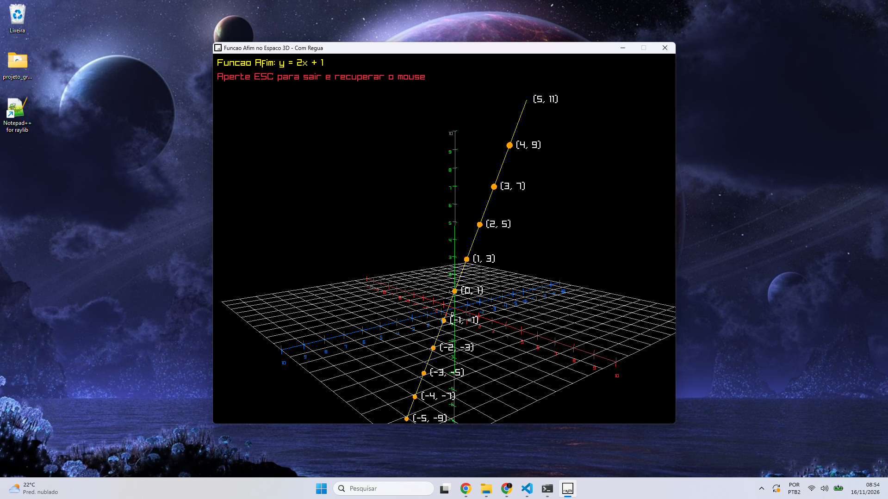
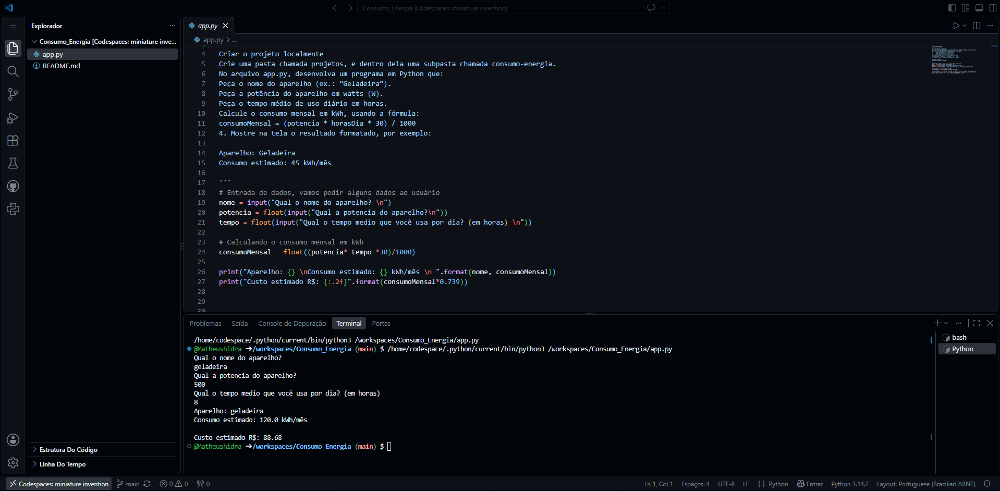
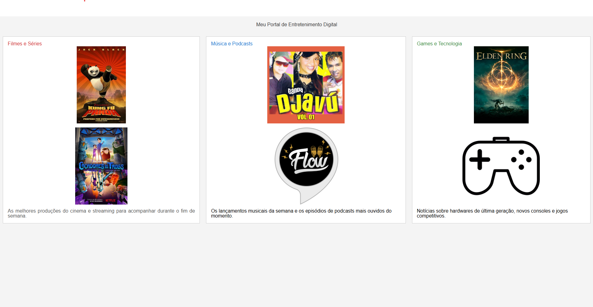

Desenvolvimento de Sistemas
Portfólio acadêmicoDesenvolvimento de Sistemas
Sou estudante de Engenharia de Controle e Automação e da área técnica de Desenvolvimento de Sistemas. Tenho foco na integração entre hardware industrial e soluções em software.
Sumaré/SP
Desenvolvimento C++ e Python
Atividades que representam minha evolução na área de desenvolvimento.



Aberto a conexões na área de automação e tecnologia.
Disponível para trocar ideias, compartilhar projetos e construir novas soluções.
Localização: Sumaré/SP